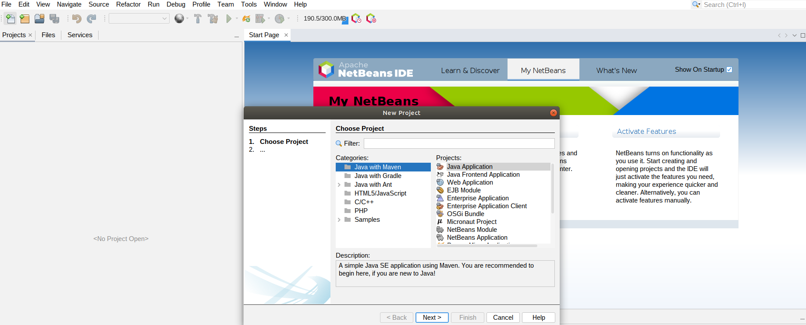
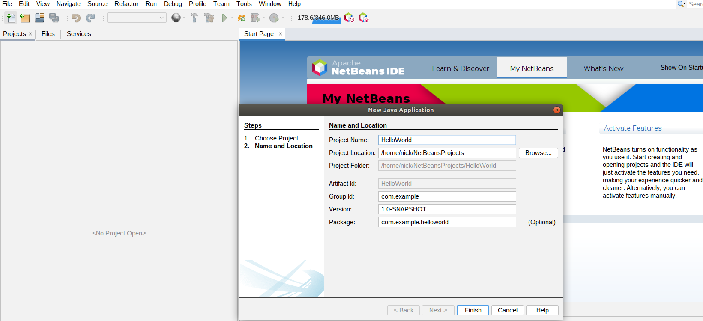
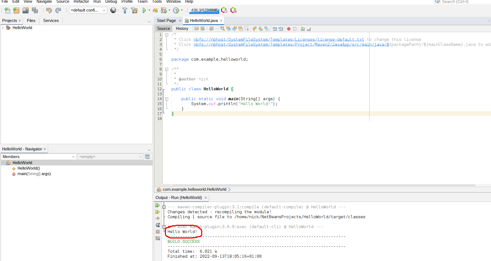
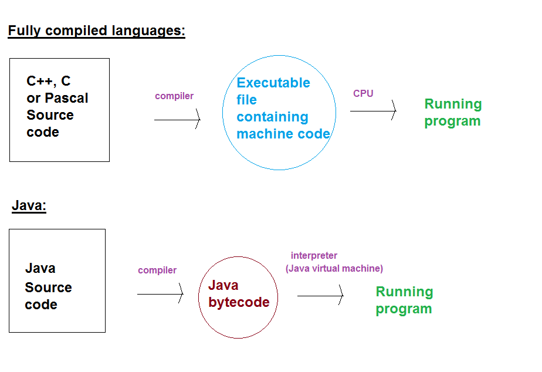

So far on your course you have been introduced to the fundamentals of programming using Python. You have learnt about variables, loops, conditional statements, arrays and functions as well as object-oriented programming. As you saw last year, object-oriented (OO) programming involves writing code to represent real world objects such as a student, a car, players and enemies in games, or graphical user interface elements such as windows and buttons. As you will hopefully see in this module, once you have learnt it, OO programming leads to more readable, more maintainable code.
Object-oriented programming can be used in many languages, such as Python, JavaScript, or C++. One of the most popular OO languages, however, is Java, and we will use Java in this module. It is one of the most commonly-used OO languages today. It is also used in many general-purpose desktop and web applications. The principal benefit of Java is that it is cross-platform: you can write a Java program on Windows and the same program will work on other operating systems such as Linux or Mac OS X.
This week will cover a fast-track introduction to Java aimed at developers who have had some basic experience with object-oriented programming in another language, such as Python. As you will have done COM411 before this module, that should include you.
Java is a combined compiled/interpreted language. What does this mean?
Java does not exactly fit into either category, but instead adopts a hybrid approach. You compile a Java program, but it is not compiled into native machine code. Instead, it is compiled into a format known as bytecode. Bytecode is a binary format understood by the Java Virtual Machine. The Java Virtual Machine (part of the Java Runtime Environment (JRE)) is a piece of software which reads and executes Java bytecode, and in doing so, runs your Java program. This is the interpreted part of the Java system. The result is that any computer with the JRE installed can read Java bytecode. So you can distribute Java bytecode to Windows, Linux or Mac systems, and as long as they have the JRE installed, they will all be able to run your program. Because it is a compact, machine-friendly format, the Java Virtual Machine can read Java bytecode faster than interpreters in pure interpreted languages can read text files of source code.
The diagram below compares a standard compiled language and Java.

Here is a Hello World application in Java.
public class HelloWorldApp
{
public static void main (String[] args)
{
System.out.println("Hello Java World!");
}
}
We will now explain the Java code line by line.
public class HelloWorldAppAll Java programs consist of one or more classes. A class is, as you saw last year in Python, a code representation of a real-world entity, such as a person or a cat. Here, the class is representing the application as a whole, which is why we have called it
HelloWorldApp. In Java, unlike Python, all code must be placed in a class!
{
Opening curly brackets begin a code block in Java. Code blocks are closed with a closing bracket }. Indentation is not compulsory, but is extremely strongly recommended in Java (for code readability) and failing to indent your code will not make you popular!
public static void main (String[] args)This begins the
main() method. A method is a function
inside a class. The main() method is a special
method in Java: it is the entry point of the program. So when you run a Java program, the first code that will be run will be the code inside the main() method.
{
This begins the code block associated with the main() method.
System.out.println("Hello Java World!");
The System.out.println() statement prints the specified message to the screen. So here,
Hello Java World! will be printed to the screen. Note how we must end our statements with a semicolon. This differs from Python. The semicolon is compulsory!
}This curly bracket closes the main() method.
}... and the second curly bracket closes the class.
We will use the Netbeans IDE to develop our code (version 14). This should be installed on the university computers, or can be downloaded from here. Each application you write should be placed in a separate project. To create a project:
Java has the standard set of arithmetic operators, which are generally the same as Python, e.g. +, -, *, / or %.
A difference between Java and Python is that Java is a strongly typed language. What does this mean? Whereas in Python, you do not need to declare the data type of a variable (by data type, we mean integer, floating-point, string and so on), in Java you do. Java has the following data types. These types are all known as primitive types. A primitive type is a fundamental data type built into the language, as opposed to a user-defined data type, created by the developer.
boolean: represents a boolean, i.e. true or false, value. Expressions return boolean values. Note that in Java, unlike in Python, true and false are lower case.byte: represents a single byte of data. Can hold the values 0 to 255.char: represents individual characters such as 'a', '!' or '$'. You will have met the
ASCII character set where the values between 0 and 127 represent single characters
(letters, numbers and punctuation from American English). An extended version, covering values 0 to 255, accounts for Western European characters (French, German etc as well as currency symbols such as the pound and the euro). However, the char data type in Java is designed to hold characters from international character sets such as Greek, Cyrillic (used in many Eastern European languages), Chinese or Arabic and therefore char occupies two bytes in Java. The two-byte system for representing characters is called Unicode.int: represents an integer (a whole number). Occupies four bytes (32 bits).
Can hold positive and negative values, and therefore can store values from -231 to +231-1 (31 bits for the number, 1 bit for the sign).long: represents larger whole numbers. Occupies eight bytes (64 bits). Again can hold positive
and negative values, and therefore can store values from -263 to +263-1.short: represents smaller whole numbers in situations where memory is limited.
Occupies two bytes (16 bits). Again can hold positive
and negative values, and therefore can store values from -215 to +215-1
(-65536 to +65535)float: represents floating-point numbers. Occupies four bytes. Recommended where memory is short
but due to the relatively low precision, not recommended for applications such as
scientific and financial data.double: represents double-precision floating-point numbers. Occupies eight bytes.
Recommended for operations where high precision is vital, such as scientific and financial data.When you wish to use a variable for the first time in Java, you have to declare it. Declaring a variable involves stating its name and what data type it is. If you try to use a variable without having first declared it, you wil get an error. For example, the code extract (note that this is not a complete program, just an extract of code):
int a; a=3;will declare that the variable
a exists and is an int, and then assigns the value 3 to
it. However:
a=3;on its own will give a compiler error as the variable
a has not been declared yet.
We can also declare a variable and initialise it in one statement. The following does this:
int a=3;
Here is a complete program which declares some variables and uses them.
public class VariablesApp
{
public static void main (String[] args)
{
int a;
a = 2;
System.out.println("The variable a is: " + a);
double b = 3.1415927;
System.out.println("The variable b is: " + b);
float c = 1.234f;
System.out.println("The variable c is: " + c);
}
}
Note how, when we initialise a float variable, we have to add the character "f"
after the number, i.e. 1.234f. This distinguishes between double and float numbers. A decimal number without an "f" is treated as a double, while one with an "f" is treated as a float.
When dealing with basic Java data types, you might come across a loss of precision error. For example:
int e = 2.718281828;Does this work? No: it generates a loss of precision error. The number 2.718281828 is a
double. However, we are trying to put a double inside an int variable.
int variables can only hold whole numbers, so we are unable to store the double inside the variable
without losing precision. Because this sort of situation is likely to be a programming error, the compiler
refuses to allow the loss of precision and generates an error.
Java also has the concept of a string. As you should know from COM411, string is a sequence of characters and is therefore used to store words, sentences, paragraphs and so
on. In Java, the data type for a string is String. Unlike the data types you met above, however,
String is not a primitive type. It is a class. Remember you
saw earlier that a class is a representation of a real-world entity. So the Java String class
is a representation of a string.
Luckily, strings are quite easy to use. Here is an example program which uses strings.
public class StringsApp
{
public static void main (String[] args)
{
String str, str2;
str = "Hello";
str2 = "World!";
System.out.println(str);
System.out.println(str + str2);
System.out.println(str + " " + str2);
}
}
This example shows how we declare String variables in the same way that we declare variables using
primitive types. The example also shows some other new concepts:
String str, str2;We could also declare and initialise multiple variables on the same line, e.g.:
String str="Hello", str2="World!";
+ (addition)
operator to join (concatenate) strings together.To obtain user input in Java, we use a Scanner. Here is an example of the use of a Scanner:
import java.util.Scanner;
public class ScannerApp
{
public static void main (String[] args)
{
String str = "";
Scanner scanner1 = new Scanner (System.in);
System.out.println("Please enter a string:");
str = scanner1.nextLine();
System.out.println("You entered: " + str);
}
}
To consider this example:
Scanner scanner1 = new Scanner(System.in)This line creates a new scanner called
scanner1 and associates it with standard input
(System.in). Standard input represents the flow of information from the keyboard to the program. (Likewise,
standard output represents the flow of information out of the program, typically to a screen; this is
what System.out represents in System.out.println().
Scanner.nextLine() reads in a line of text from the keyboard and stores
it in a String variable.import java.util.Scanner;This is importing
Scanner from the package java.util. This is rather like importing modules in Python.It is possible to use the Scanner to read in numbers from the keyboard. There are dedicated methods for doing
this, such as nextInt() or nextDouble() (rather than nextLine() ) but using a mix of these
and nextLine() can lead to problems where new line (ENTER) characters are left in the input and can
disrupt subsequent attempts to read in data. So a better approach is to read in everything as a string
and convert the string input to a numeric data type, as required. The example below shows this:
import java.util.Scanner;
public class NumberScannerApp
{
public static void main (String[] args)
{
String str = "";
Scanner scanner1 = new Scanner (System.in);
System.out.println("Please enter an integer:");
str = scanner1.nextLine();
int i = Integer.parseInt(str);
System.out.println("You entered the integer " + i);
}
}
Note how we read the input in as a string and then convert it to an integer
using Integer.parseInt(). Integer.parseInt() is commonly used in Java: it takes in a String
as a parameter and returns an integer. There are similar methods for other numeric data types, such as
Double.parseDouble() for converting strings into doubles.
This example shows how to do an if statement in Java:
import java.util.Scanner;
public class GuessTheYearApp
{
public static void main (String[] args)
{
Scanner scanner = new Scanner(System.in);
System.out.println ("Which year was the most recent London Olympics?");
String yearAsString = scanner.nextLine();
int year = Integer.parseInt(yearAsString);
if(year==2012)
{
System.out.println("Correct!");
}
else
{
System.out.println("Wrong!");
}
}
}
Hopefully you can recognise the if / else structure that you have seen
already in Python. Note the use of the braces (curly brackets) { and } to begin and end the code block associated with the if and else keywords.
In addition,
we can also have one or more else if blocks to handle multiple conditions. These are the equivalent of elif in Python.
Like other languages, Java has comparison and logical operators. The comparison operators you have met in Python also apply in Java, e.g. ==, <, >, <=, >=, and !=.
The logical operators are a bit different to Python. Rather than the words and, or and not, symbols are used:
&& : and||: or
! (in front of an expression) : not e.g. if(!b) is equivalent to if(b == false)In common with other languages, you can write loops in Java. You should remember from COM411 that a loop involves iteration: repeating the same section of code over and over again until some condition is met. Java has four types of loops:
The while loop has this syntax in Java:
public class WhileLoopApp
{
public static void main (String[] args)
{
int i = 1;
while(i <= 10)
{
System.out.println("Number = " + i);
System.out.println("Square of number = " + i*i);
i++;
}
}
}
The do/while loop is similar to the while loop, but performs the check at the end of the loop rather than the beginning. For example:
public class DoWhileLoopApp
{
public static void main (String[] args)
{
int i = 1;
do
{
System.out.println("Number = " + i);
System.out.println("Square of number = " + i*i);
i++;
}while(i <= 10);
}
}
Sometimes the logic of a loop means that it's better to put the check at the end of the loop rather than the beginning, and the do/while loop allows us to do that. Note also how we need to put a semicolon after the while condition; this is because the statement ends here, whereas for a while loop the
condition is at the beginning of the loop.
Java also has a for loop, in common with many other languages, though the syntax is a bit different to Python. The syntax is:
for(initialisation; continue condition; change)where:
public class ForLoopApp
{
public static void main (String[] args)
{
for(int i=1; i <= 10; i++)
{
System.out.println("Number = " + i);
System.out.println("Square of number = " + i*i);
}
}
}
We will now look at how to create classes and objects in Java.
Here is an example of a Java class representing a Cat:
public class Cat
{
private String name;
private int age, weight;
public Cat (String nameIn, int ageIn, int weightIn)
{
this.name = nameIn;
this.age = ageIn;
this.weight = weightIn;
}
public void walk()
{
this.weight--;
}
public void display()
{
System.out.println("Name: " + this.name + " Age: " + this.age + " Weight: " + this.weight);
}
}
So what does this code mean?
public class CatThis line states that we are creating a class called
Cat. Remember that a class is a blueprint
or specification for all objects of that type. So the class will not actually create an
individual, specific Cat, but instead, describes what Cats are and how they operate.
private String name;This line is defining an attribute called
name. The line is saying that each Cat object
created using this class will have their own name attribute, representing their name.
We will come on to the meaning of the keyword private a bit later.
private int age, weight;This line does the same for the age and the weight, which are both integers.
public Cat (String nameIn, int ageIn, int weightIn)
{
this.name = nameIn;
this.age = ageIn;
this.weight = weightIn;
}
This piece of code is called a CONSTRUCTOR. A constructor is a special method (see below) which is used to initialise objects of the current class. It is the equivalent of the initialisation method __init__() in Python. A constructor has the same name as the class. (We will see the meaning of public later).
When we create an object (and you will see how to do this below) the constructor is called. It takes parameters It takes parameters
(nameIn, ageIn and weightIn) and sets the attributes to the parameters passed in. Remember the difference between attributes and parameters:
main().
This is why I have named them nameIn, etc. You can think of them as temporary: a
parameter is just there to get the information into objects of the class from outside.this to represent the attributes. this represents
the current object we are working with. It's the equivalent of self in Python, but does not need to be specified as a parameter. So the code will set the attributes of whichever object we're initialising to the parameters passed in.
(this is actually optional here, but I have included it for clarity).
public void walk()
{
this.weight--;
}
This is a method, which, as we saw last year, is an action or something that
objects of a class can do. A method is essentially a function inside a class. The method is called walk(). The effect of this method is
to walk a cat by reducing the cat's weight (this.weight) by one.
public void display()
{
System.out.println("Name: " + this.name + " Age: " + this.age + " Weight: " + this.weight)
}
This code defines another method called display() which displays the details of the cat.
I cannot emphasise strongly enough that the above code does not actually create any specific Cat objects. It merely defines a Cat class, which is a blueprint or specification for what Cats are and what they do. We need, in addition, to create specific Cat objects in our main() (or elsewhere outside the Cat class). Here is a main() which creates two Cat objects and calls methods of them:
public class CatApp
{
public static void main (String[] args)
{
Cat clyde = new Cat ("Clyde", 2, 5);
Cat binnie = new Cat ("Binnie", 5, 4);
clyde.display();
binnie.display();
clyde.walk();
binnie.walk();
clyde.display();
binnie.display();
clyde.walk();
clyde.display();
}
}
How is this code working?
Cat clyde = new Cat ("Clyde", 2, 5);
Cat binnie = new Cat ("Binnie", 5, 4);
These two lines create two specific Cat objects, clyde and binnie. Note the keyword
new. This means that we are creating a new object of the specified class (Cat here).
Note also how we pass into the object three pieces of information: the name (e.g.
"Clyde"), the age (e.g. 5), and the weight (e.g. 4). These three pieces of information
become the parameters in the constructor. So if we revisit the constructor:
public Cat (String nameIn, int ageIn, int weightIn)
{
this.name = nameIn;
this.age = ageIn;
this.weight = weightIn;
}
When we create our first Cat,
nameIn takes the value "Clyde", ageIn takes the value 2, and weightIn takes the
value 5. Since the constructor then sets the attributes to these three parameters, the
name, age and weight attributes of the object clyde will be "Clyde", 2, and
5 respectively. So when we display the object clyde:
clyde.display();then the
display() method will be called, which, if you remember, is as follows:
public void display()
{
System.out.println("Name: " + this.name + " Age: " + this.age + " Weight: " + this.weight)
}
Since the display() method displays the name, age and weight attributes, which we set in the
constructor, the display() method will output:
Name: Clyde Age: 2 Weight: 5
Likewise for the second cat, we will set up a cat with a name attribute of "Binnie", an
age attribute of 5 and a weight attribute of 4, so that when we display Binnie we end up
with:
Name: Binnie Age: 5 Weight 4
Having displayed the cats, we then walk() them:
clyde.walk(); binnie.walk();These two lines will call the
walk() method on clyde and binnie. Since the effect of
the walk() method is to reduce the weight attribute of the current cat by one, when we
display() the two cats again, their weight will be reduced by one. We then walk() Clyde again
so Clyde's weight will be reduced by a further unit.
So the overall output of the program will be:
Name: Clyde Age: 2 Weight: 5 Name: Binnie Age: 5 Weight 4 Name: Clyde Age: 2 Weight: 4 Name: Binnie Age: 5 Weight 3 Name: Clyde Age: 2 Weight: 3
Strings and the mark should be a double. After reading in the details, print them. You do not, at this stage, have to create a Student class. Just use simple variables to store the data.CatApp) and add the Cat and CatApp classes above to it. You will need to create a new class for Cat (CatApp will be the default class created). To do this, select File/New File in Netbeans and then pick Java class:
Cat in your case):
CatApp and Cat classes, respectively.Cat called eat(). The eat() method should add one to the weight of the cat.main() of CatApp to create two Cats with these attributes:
Name: Flathead Age:7 Weight:10 Name: Cupra Age:2 Weight:7Make Flathead eat twice, and display Flathead's details. Make Cupra walk four times, and display Cupra's details.
Student to represent a student.
Give it the following attributes:
id, representing the student's ID (String)name, representing the student's name (String)course, representing the student's course. (String)mark, the student's mark (Double).printDetails() should print the details of the student (name, course and mark).
main() from questions 2-4 to create a Student object each time the loop runs, using the details the user entered from the keyboard. Then, still within the loop, display each student by calling its printDetails() method.